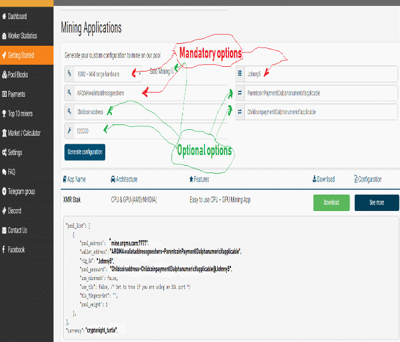

Frequently Asked Questions (FAQ)
How
do I pick which coins to merge mine?
The
hash work of your miner application to the parent coin is also
applied to the child coin you specify in the mining software pool
password field.
You
must mine at one parent coin, which in this case is ARQ for
ArQmA.
Specify your ArQmA wallet address and static difficulty per
the Getting
Started
page.
Using the pool password field in your miner to specify one
of the child coin wallet addresses. See which child coins are listed
on the pool's Dashboard
page.
You will need at least a wallet address from an exchange or
a wallet/paper wallet application to get an coin address for the
parent coin and each child coin you wish to merge mine.
You
can also connect multiple rigs with the same wallet address for the
parent coin, and different child coin wallet address to apply hash to
that child coin also.
Specify
your rig_id in your miner software.
Put your child coin wallet
address in the pool password field and put "@rig_id" at the
end.
It can be a direct to exchange address also.
For example in XMR-STAK, the
pools.txt config file looks something like this:
"rig_id"
: "Johnny5",
An
example wallet for Turtle child coin is
"TRTL2aedfsr23blahlongaddressfield+paymentIDsomething"
so make it formatted for the pool password as
"pool_password"
: "TRTL2aedfsr23blahlongaddressfield+paymentIDsomething@Johnny5"
You
can also use the configuration generator within the Getting
Started section
of the pool.

Also,
you can segment your cpu mining on one mining application to be
applied to
the parent coin and specify
your hash work one of the several child coins.
There is no limit
on how many workers you can specify. You can also customize your
miner application to mine only with certain gpus to a particular
parent/child combination. Probably you can run several mining
applications in tandem as long as they use only resources you
specify.
----
Where are the stats for the pool? Why hasn't anything changed?
The dashboard lists the coins being mined, reward for each block, current effort on each block for the merged mining. Sometimes the Pool Blocks section and Worker Statistics needs a refresh by your browser to get updated stats. Typically that is pressing CTRL+F5 to flush the cache and ask your brower for fresh data .
------
What is
difficulty?
Difficulty is a measure of how difficult it is to find a hash below a given target. The target difficulty changes from block to block based on the network hashrate attempted by all nodes on a coin network. However, the difficulty for child coins can be dissimlar to the parent coin you start mining with.
----------
What is luck?
Mining is probabilistic in nature: if you find a block earlier than you statistically should on average you are lucky if it takes longer, you are unlucky. In a perfect World pool would find a block on 100% luck value. Less then 100% means the pool was lucky. More then 100% means the pool was unlucky.
------------------
What is a share?
Share is a possible valid hash for the block. Shares are beings sent by your rigs to the pool to prove their work. You should set your fixed difficulty to be somewhere around your hash rate average on your miner multiplied by 28-30. Aim for your average number of accepted shares to be within the block time (30 seconds typically for child coins, 2 minutes for ARQ)
If your shares are accepted
faster, but with lower difficulty each share is worth less, but you
should get at least one share in per average block time. It doesn't
help the pool by spamming a large amount of low difficulty shares. It
tends to tie up more resources and might get you
banned.
---------
What is a block?
Transaction data is recorded in
blocks. New transactions are being processes by miners into new
blocks which are added to the end of the blockchain.
--------------------
How long does it take to find a block?
It
depends on amount of active miners. The more miners work on pool →
the more hashrate pool has →
the more blocks are found by the pool. However the more miners are
active →
the less reward you get from each block found.
Probablistically,
even smaller pools will less miners or hash rate will eventually get
a block.
Decentralizing the hash proof of work across several
pools on any network is important for security of the coin network,
for both the parent coin and the child coins.
The block time is
how long it can take on average amount effort . The average for ArQmA
is 120 seconds. However, some of the child coins have block
timeframes on the average of 15 to 30 seconds. Check your child coins
network specification. Some blocks are solved faster than the average
block time, some blocks can have a higher than average block effort
time.
Also some other pools might solve the block first, and
there is a slim possibility of an orphan block on a child coin being
mined.
---
What
is an orphan block?
An
orphan is a block that didn't meet the requirement as a solution to
the block found. Also, there can be a situation where another pool or
solo miner found the block
solution first, and narrowly won the race. Blocks are confirmed by
hash verfication by all the nodes on the coin's network. If there is
a consensus of which node(pool,solo) found it first, then that block
is added to the block chain permanenty with credit applying to that
pool/solo/node.
A few orphan blocks on child coins can happen when
the parent coin's hash work doesn't meet the requirements.
---
Which
payouts scheme is used?
Proportional (Share-based): Every time a block is found, its reward is split between miners according to the number of shares they submitted.
---
How is the current payout estimate is calculated?
The estimated payout is a calculated using your percentage of valid shares on the total for current round in proportion to the total shares submitted by all miners/workers in that round. This percentage is then applied to the reward of the last block found by the network and subtracting the small pool fee.. See the Worker Statistics page on the pool web page.
--------------------------------------
I
have been mining on this pool for 1 hour but still have not received
any payouts. WTF?
As
soon as the block is found you will get your reward. Please wait a
little bit more time. In the case of ArQmA, a block has at least 18
confirmations before the pool starts its payout cycle. Typically
every 36 minutes for a completed block plus the time interval set by
the pool operator on the pool's Dashboard
screeen.
Payments can be halted for various reasons within the automated pool
software, but highly unlikely. There is usually a minimum payout for
each parent coin and child coins. Payments for matured blocks that
meet the minimum can also be triggered manually by a pool
operator/administrator. Ask nicely in Telegram or Discord support.
Please have your information all in order before you ask such as
miner application, version number, gpu and cpu information, wallet
addresses, and error messages reported.
The merge mined child
coins have a different number of confirmation blocks needed, but at
least the pool checks for fully verified blocks set at the interval
on the Dashboard page. Not every parent block found generates a child
block.
Check the Pool
Blocks page
on the pool. Or configure your settings to get an email alert if you
like on the Settings
pool page.
---
My
hashrate is wrong! Why?
Since
you start to mine your hashrate grows gradually. Please wait. The
pool determines your hashrate based on the amount of shares sent by
your mining rigs (workers). This value could be a little bit
different from reported hasrate (in your mining
software).
---
What
is solo mining?
Solo
mining is attempting to find a block by yourself separate from the
pool of proportional
miners collectively solving the current block.You get almost the
entire block reward minus a small fee for the pool. You can specfy
your mining software by changing the wallet address with a prefix of
"solo:" added to your wallet specification.
However, if
the coin network has a high hash in total (see Dashboard), the
difficulty is also higher. Typically only very large mining rigs with
at least 5-10% of the coin network total is needed to get timely solo
blocks. However, you could get a string of blocks on lucky streak,
then not find a block solution for a very long time. The more hash
rate, the higher the probability(luck). You can generate a solo
configuration on the Getting
Started page
on the pool. Tick the checkbox "solo mining". However, as
solo you are also competing against the pool proportional share
miners, and evvery single node on the parent coin network also.
In
the case of solo merged mining specified in the pool password field,
you are also competing against the main pool users on proportional
shares, and the entire child coin network and the other pools on the
parent network that are also merge mining. However the reward is
much higher since you might get two coin blocks(or more) for the
same effort.
---
I've
been banned by the pool itself. What do I do now?
Disconnect
your miner for five minutes at least. Then try again. Please pay
close attention to error messages reported by the pool software to
your miner client software. Typical errors are invalid parent wallet
address format, or bad child coin wallet address specified in the
pool password field. Check your miner logs if you have them turned
on.
Did you forget to turn off nicehash option?
For persistent
banning, check with the pool operator or Admininstrator to see if
there is something else going wrong outside of your control. Links
for Telegram and Discord support are on the left side of the pool web
page front end.
-eof